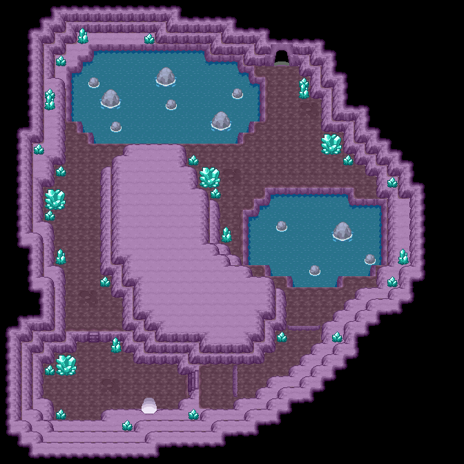
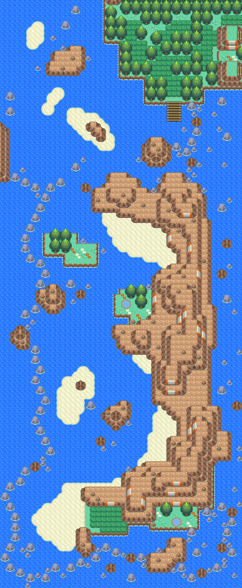
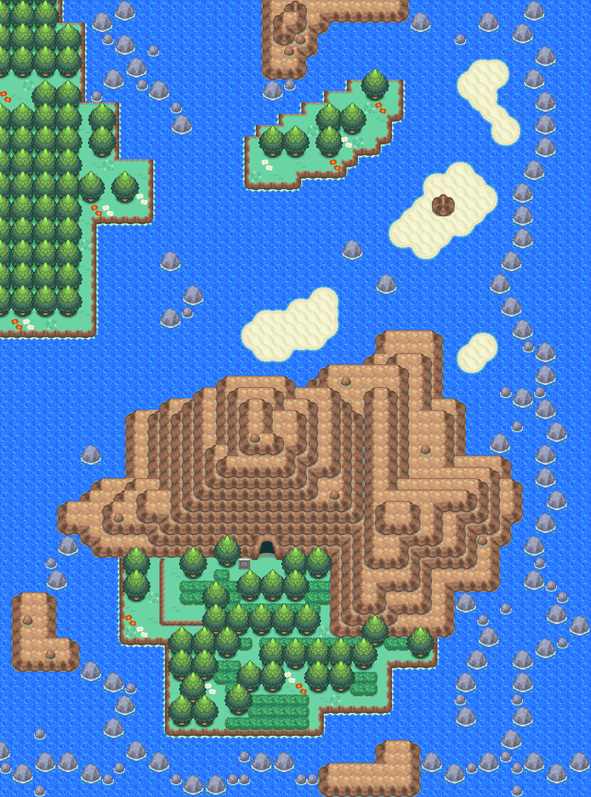
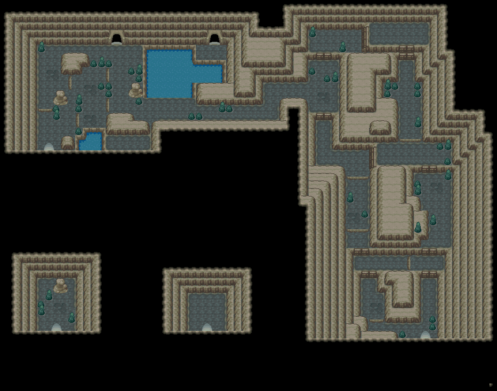

黄色碎片
小块黄色碎片。
获取：寂静之丘(22,24) ／ 50号水路(40,51) ／ 50号水路(42,7) ／ 黑暗洞穴(7,40)
用途
小块黄色碎片。 来自于某种很久以前造出的工具。
标价 1000 口袋：道具
获取方式
地面隐藏


人物剧情
- 50号水路（区域130） · (42,7) · 与坐标处人物交互 · 数量 1 · 地图｜静态图 · 触发条件待补
- 黑暗洞穴（区域177） · (7,40) · 与坐标处人物交互 · 数量 2 · 地图｜静态图 · 触发条件待补


数据来源
- 来源文档：out/items.json（
/50） - 表索引 index 0050；内嵌 itemId 50；口袋 ITEMS (id=1)；type 4；hold_effect 0/0；importance 0；unk19 0
- 获取来源文档：maps_research/out/events/events.json、maps_research/out/scripts/scripts.json
- 获取记录 ID：
hidden:1:103:0、hidden:3:103:4、script_item_candidate:std:08AE0A3D:3:105、script_item_candidate:std:08AF0274:1:125 - 说明文字解码来源：
reference/SAVE_HOME_GAME_DATA.json.charmap
相关支线
任务可能要求携带本条目，或将其作为奖励；具体用途见任务步骤。
地点地图
共享RGB底图；点击可缩放定位。数字对应本页相关地点，不代表地图上全部事件。
寂静之丘

1 黄色碎片（22,24）
50号水路

1 黄色碎片（40,51）
50号水路

1 黄色碎片（42,7）
黑暗洞穴

1 黄色碎片（7,40）